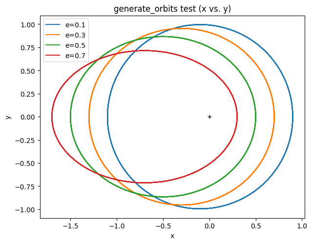
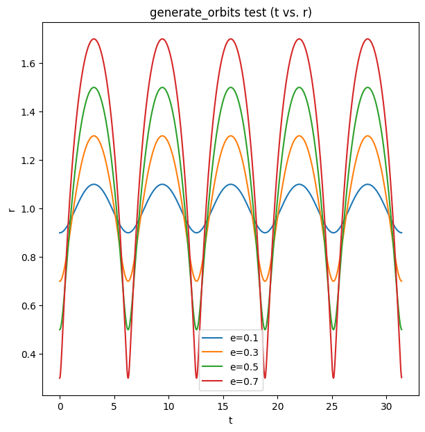
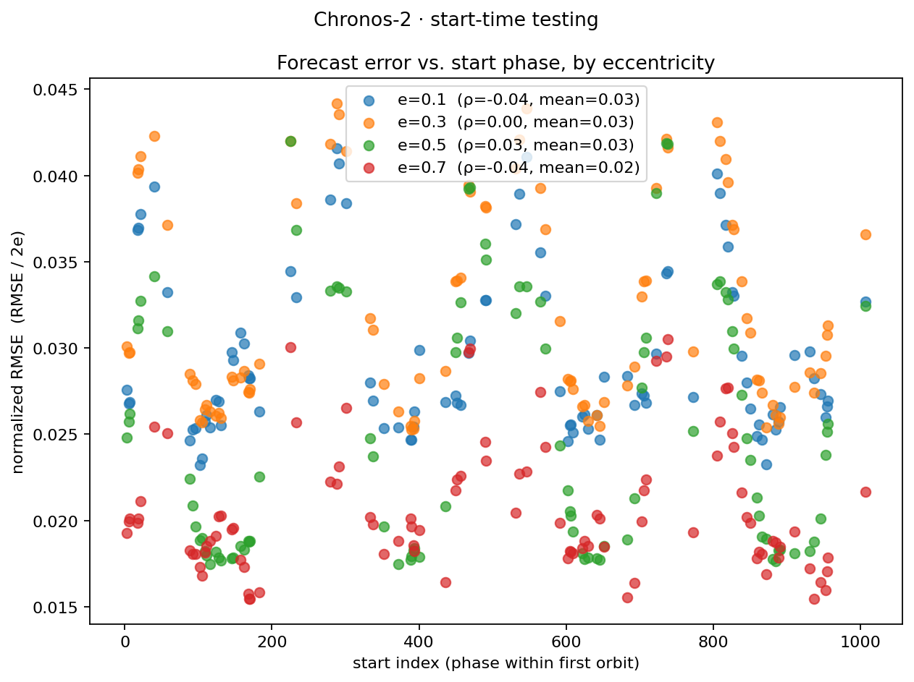
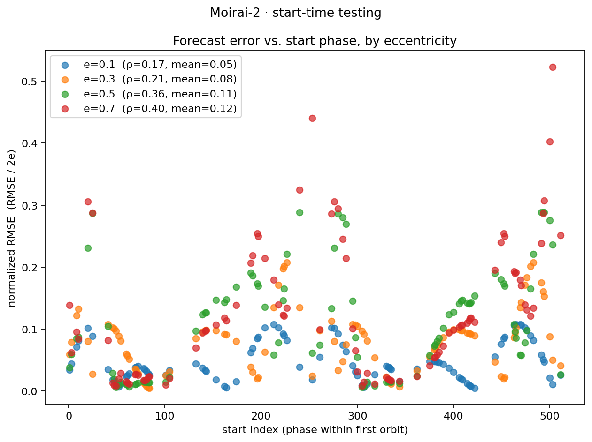
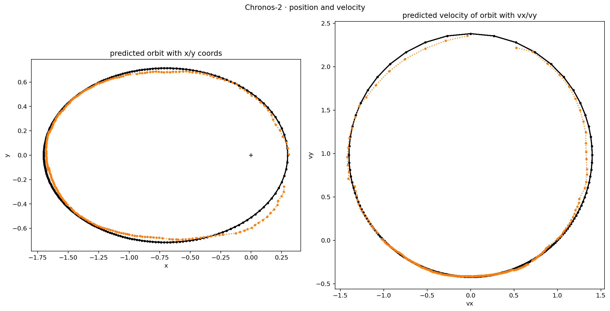
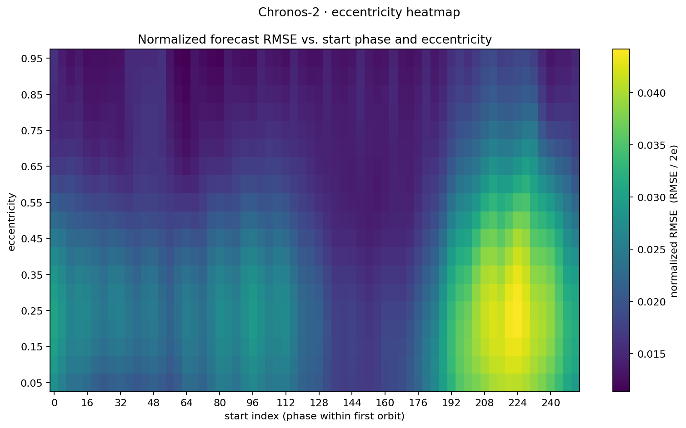
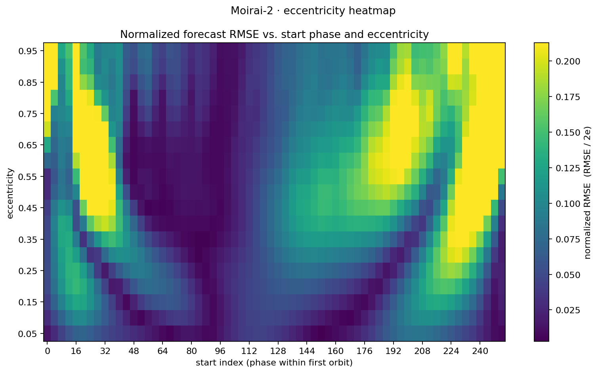

Space / orbital forecasting
Exploring orbital motion and how time-series models forecast it. These graphs come from the project’s notebook and forecasting experiments.
How eccentricity works & orbital radius over time
Increasing eccentricity stretches a circular orbit into an ellipse and increases the variation in distance from the central body. These saved notebook outputs show the same orbits as paths and radius time series.
Orbital paths

Radius over time

Start-time testing: Chronos and Moirai
Forecast error across 100 sampled starting indices for each eccentricity. The scripts use their original configurations: Chronos-2 uses 1,024 context samples and a 512-sample forecast; Moirai-2 uses 512 and 64. These are side-by-side experiments with different horizons, not a controlled model ranking.
Chronos-2

Moirai-2

Generate an orbit with velocity
Chronos-2 forecasts position and velocity together, using 2,048 context samples and a 256-sample forecast at eccentricity 0.7. Black shows the observed context; dotted orange shows the forecast. This experiment has a Chronos result only.
Chronos-2

Eccentricity heatmaps: Chronos and Moirai
Normalized forecast error across eccentricities 0.05–0.95 and starting indices spaced by four samples. Chronos-2 uses 8,192 context samples and a 512-sample forecast; Moirai-2 uses 512 and 64. The original scripts use different color scaling; read each color bar independently.
Chronos-2

Moirai-2
